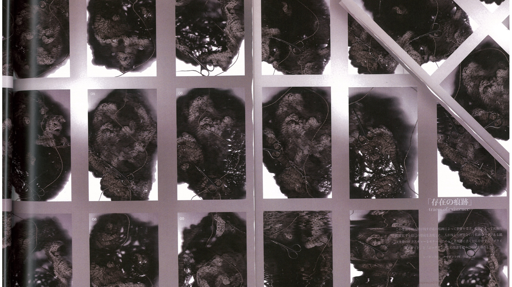

Current Project
Technofossil Archive
Contemporary waste and everyday objects are reinterpreted as fossils of the future through wrapping, preservation, flocking, and metadata design.
Silent Archive / Material Archaeology
A quiet digital archive for material research, textile practice, spatial installation, and future archaeology.
素材と構造、身体と空間、記憶と時間の関係を読み解くための実践
Enter Technofossil Archive
Statement
Rather than understanding form as a fixed and completed outcome, atelier alt.formula approaches it as formula—an ongoing process of generation and transformation.
form＝かたちを固定された完成形ではなく、絶えず生成し変容する formula＝かたちを生み出す仕組みとして捉えます。
Featured Projects
Current Project
Contemporary waste and everyday objects are reinterpreted as fossils of the future through wrapping, preservation, flocking, and metadata design.
Material Study
Sericulture, cocoon-derived waste, and silk memory are re-read as a process for future textile and garment production.
Recent News